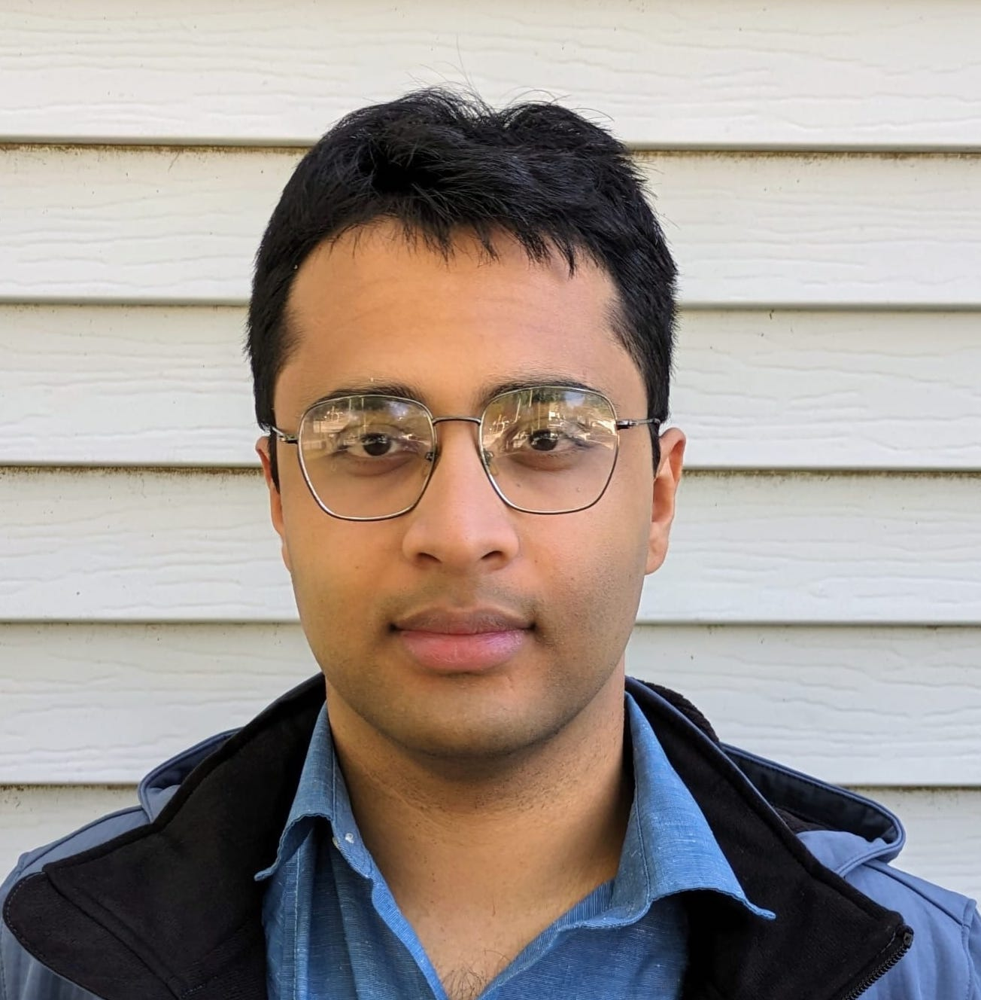

Kabir Tomer

Contact: [firstname] [lastname] [at] gmail [dot] com
About
I am a fourth-year PhD student at UIUC, advised by Dakshita Khurana. Previously, I was an undergraduate at IIT Delhi advised by Venkata Koppula. I am broadly interested in theoretical computer science. My research focuses on questions at the intersection of quantum computing and cryptography.
Some of my work was recently featured in Quanta Magazine.
You can find my CV here and my Google Scholar page here.
In Submission
Publications
-
On the Cryptographic Foundations of Interactive Quantum Advantage
with Mark Zhandry (QIP 2026)
-
Founding Quantum Cryptography on Quantum Advantage, or, Towards Cryptography from #P-hardness
with Dakshita Khurana (STOC 2025, QIP 2025, Invited to the SICOMP Special Issue for STOC 2025)
-
Commitments from Quantum One-Wayness
with Dakshita Khurana (STOC 2024, QIP 2024)
-
Weak Zero-Knowledge via the Goldreich-Levin Theorem
with Dakshita Khurana, Giulio Malavolta (ASIACRYPT 2023)
-
OpenVoting: Recoverability from Failures in Dual Voting
with Prashant Agrawal, Abhinav Nakarmi, Mahabir Prasad Jhanwar, Subodh Sharma, Subhashis Banerjee (EVOTE-ID 2023)
Talks
Here is a selection of expository talks I have given.
-
A tutorial on one-way puzzles [slides]
-
An overview of one-wayness and the foundations of quantum cryptography [slides][video]